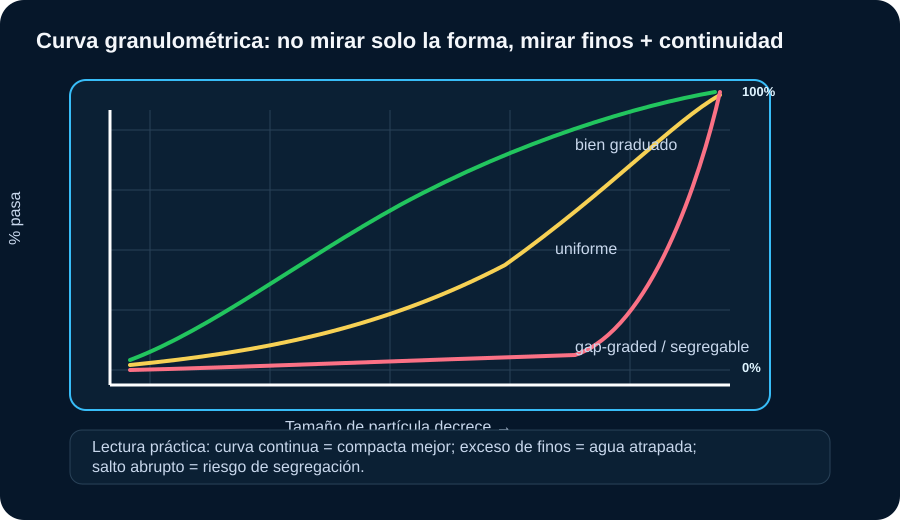
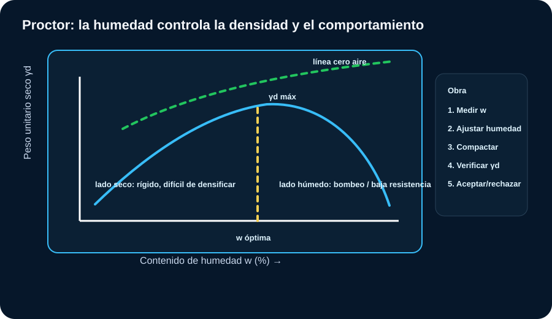
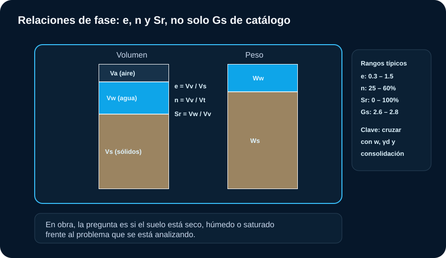
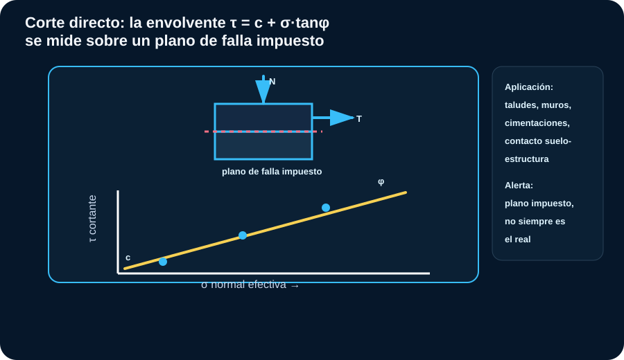

Mecánica de Suelos
El objetivo no es acumular ensayos: es transformar resultados en decisiones. Cada gráfico debe contestar: qué suelo tengo, cómo responde al agua, cuánto se deforma, cómo resiste y qué riesgo constructivo genera.
Mapa de decisión
| Pregunta de ingeniería | Ensayos que ayudan | Decisión práctica |
|---|---|---|
| ¿Qué material tengo? | Visual-manual, granulometría, Atterberg, SUCS/AASHTO | Clasificar, seleccionar uso y anticipar problemas de agua o plasticidad. |
| ¿Se puede compactar? | Proctor, humedad, densidad de campo | Aceptar/rechazar capas, airear, humedecer, cambiar equipo o material. |
| ¿Se asienta? | Edómetro, e-log σ’, Cc, Cr, Cv, OCR | Estimar magnitud y tiempo; decidir precarga, drenes o cimentación profunda. |
| ¿Resiste al corte? | Inconfinada, corte directo, triaxial UU/CU/CD | Diseñar taludes, cimentaciones, contenciones y etapas constructivas. |
| ¿Drena? | Permeabilidad, granulometría, observación del NF | Definir filtros, bombeo, drenaje, riesgo de erosión interna o presión de poros. |
Regla senior
Un parámetro aislado no diseña. Un IP alto sin humedad no dice lo mismo que un IP alto saturado; un Cc alto sin incremento de esfuerzo no define asentamiento; un N-SPT sin energía corregida es sólo un número con casco.
Granulometría
La curva muestra distribución, continuidad, finos y riesgo de segregación o drenaje deficiente.

Cómo leer: curva continua y bien distribuida suele compactar mejor; curva uniforme puede drenar pero tener baja trabazón; exceso de finos penaliza drenaje y sensibilidad al agua.
Criterios usuales
| Resultado | Lectura técnica | Qué hacer en obra |
|---|---|---|
| Finos < 5% | Material granular limpio. | Verificar drenaje, trabazón y compactación; controlar segregación. |
| Finos 5–12% | Zona de doble símbolo SUCS; comportamiento mixto. | Cruzar con Atterberg; puede cambiar mucho con humedad. |
| Finos > 12% | El comportamiento empieza a depender de plasticidad. | No aprobar como base/subbase sin revisar IP, equivalente de arena y especificación. |
| Cu y Cc adecuados | Gradación favorable si cumple criterios SUCS. | Mejor compactabilidad, menor vacíosidad, buen soporte si el material es durable. |
| Curva con salto | Riesgo de material gap-graded. | Controlar segregación durante acopio, transporte, extendido y compactación. |
Límites de Atterberg
Relacionan plasticidad, sensibilidad al agua y comportamiento volumétrico.

Cómo leer: sobre la línea A predominan arcillas; bajo la línea A predominan limos. A LL alto e IP alto, mayor riesgo de compresibilidad, expansión o pérdida de soporte al humedecerse.
Interpretación práctica
| Parámetro | Rango orientativo | Criterio de obra |
|---|---|---|
| IP < 7 | Baja plasticidad. | Puede ser más trabajable, pero revisar erosión, colapso o sensibilidad si es limo. |
| IP 7–17 | Plasticidad media. | Controlar humedad de compactación y variación estacional. |
| IP > 17 | Alta plasticidad. | Riesgo de expansión, contracción, bombeo, baja capacidad en pavimentos. |
| LL > 50 | Alta plasticidad. | Revisar asentamiento, estabilidad de excavación y cambio volumétrico. |
| IL > 1 | Humedad natural supera LL. | Suelo muy blando/sensible: no asumir soporte sin ensayos de resistencia. |
Compactación y densidad de campo
El Proctor da la meta; la densidad de campo dice si la obra llegó a esa meta.

Cómo leer: del lado seco cuesta densificar; del lado húmedo se pierde resistencia y aparece bombeo. La humedad óptima no es decoración, es instrucción de obra.
Decisiones frecuentes
| Resultado | Diagnóstico probable | Acción |
|---|---|---|
| w < wopt - 2% | Material seco, rígido, baja densificación. | Humedecer y homogeneizar antes de compactar. |
| w ≈ wopt | Condición favorable. | Compactar con equipo adecuado y verificar densidad. |
| w > wopt + 2% | Material húmedo, bombeo o deformación. | Airear, escarificar, mezclar con material seco o reemplazar. |
| GC < especificado | No cumple densidad. | Recompactar o rediseñar procedimiento; no tapar con la siguiente capa. |
Densidad de campo
El Proctor define la meta; el método de campo confirma si la obra la alcanzó.

Cómo elegir: el cono de arena es el método de referencia, económico y sin licencia, pero pierde precisión en gravas gruesas; el densímetro nuclear es rápido pero requiere licencia y calibración; la membrana de hule rinde mejor en materiales gruesos o irregulares donde el cono falla.
Comparación práctica
| Método | Ventaja | Cuidado principal |
|---|---|---|
| Cono de arena | Económico, no requiere licencia, referencia clásica del ensayo. | Lento; pierde precisión en gravas gruesas o suelos muy sueltos. |
| Densímetro nuclear | Rápido, muchas lecturas por turno. | Requiere licencia, calibración y protocolo de radioprotección. |
| Membrana de hule | Buen desempeño en gravas y materiales irregulares. | Más lento que el nuclear; cuidado al perforar la membrana. |
| GC < especificado | No cumple la densidad de proyecto, sea cual sea el método. | Recompactar o ajustar humedad antes de tapar con la siguiente capa. |
Permeabilidad
El agua gobierna drenaje, presión de poros y desempeño a largo plazo.
| Suelo | k aproximado | Lectura práctica |
|---|---|---|
| Grava limpia | 10⁻¹ a 10⁻³ m/s | Drena rápido; revisar filtros y erosión interna. |
| Arena | 10⁻³ a 10⁻⁵ m/s | Puede drenar, pero depende de finos y densidad. |
| Limo | 10⁻⁵ a 10⁻⁷ m/s | Drenaje lento; susceptible a piping/erosión o colapso. |
| Arcilla | <10⁻⁷ m/s | Consolidación lenta; presión de poros crítica. |
Relaciones de fase
Humedad, vacíos y saturación alimentan esfuerzos efectivos, compactación y asentamientos.

Cómo leer: el mismo suelo cambia de comportamiento según esté seco, húmedo o saturado frente al problema analizado; e, n y Sr no son datos para archivar, alimentan σ’, compactación y asentamientos.
Calculadora preliminar de fase
e = Gs·γw/γd − 1 · n = e/(1+e) · Sr = w·Gs/e, con γw = 9.81 kN/m³.
Consolidación unidimensional
El edómetro no contesta “si aguanta”; contesta cuánto se asienta y en qué tiempo.

Cómo leer: si la tensión efectiva final supera σ’p, el suelo entra en compresión virgen y el asentamiento crece con Cc. Cv gobierna la velocidad, no la magnitud final.
Rangos de interpretación
| Resultado | Lectura | Impacto en obra |
|---|---|---|
| Cc < 0.20 | Compresibilidad baja a moderada. | Asentamientos usualmente manejables, revisar diferencial. |
| Cc 0.20–0.40 | Compresibilidad media. | Puede controlar servicio en plateas, rellenos y terraplenes. |
| Cc > 0.40 | Alta compresibilidad. | Evaluar precarga, drenes, mejora o cimentación profunda. |
| OCR ≈ 1 | Normalmente consolidado. | Alta sensibilidad a nuevas cargas; usar Cc si supera σ’p. |
| OCR > 1 | Sobreconsolidado. | Menor asentamiento en recomprensión; cuidado si la carga supera σ’p. |
| Cv bajo | Consolidación lenta. | Asentamientos diferidos: monitoreo, etapas o drenes verticales. |
Calculadora preliminar de asentamiento primario
Fórmula simplificada para compresión virgen: S = Cc·H/(1+e₀)·log((σ'₀+Δσ)/σ'₀). Para OC se debe partir la trayectoria con Cr/Cc.
Corte directo
Resistencia sobre un plano de falla impuesto, no necesariamente el plano real.

Cómo leer: varios esfuerzos normales generan una envolvente τ = c + σ·tanφ. Útil para taludes, muros, cimentaciones y contacto suelo-estructura, especialmente en condiciones drenadas.
Interpretación práctica
| Resultado | Lectura técnica | Qué hacer en obra |
|---|---|---|
| φ alto, c≈0 | Comportamiento granular; domina la fricción. | Buen indicador para taludes y rellenos drenantes; cruzar con densidad relativa. |
| c y φ presentes | Componente cohesiva además de friccional. | Típico en suelos parcialmente cementados o arcillas preconsolidadas; cruzar con triaxial si el riesgo es alto. |
| Corte rápido en finos | Puede generar presión de poros no disipada. | No representa una condición drenada real; repetir con velocidad acorde al tipo de suelo. |
| Plano impuesto | La falla ocurre donde se la obliga, no donde el suelo elegiría. | No usarlo como único ensayo si la superficie real puede ser distinta, por ejemplo en taludes con estratigrafía compleja. |
Ensayos triaxiales (UU / CU / CD)
Antes de elegir ensayo, definir drenaje, tiempo de carga y tipo de suelo.

Cómo leer: los círculos de falla permiten construir la envolvente. En análisis efectivos se usa c’ y φ’; en corto plazo no drenado se usa Su.
Qué triaxial usar
| Ensayo | Entrega | Cuándo sirve |
|---|---|---|
| UU | Su en esfuerzos totales. | Corto plazo en arcillas saturadas: excavación rápida, carga inicial, terraplén rápido. |
| CU con u | Su, presión de poros, c’ y φ’. | Condición muy útil para taludes, cimentaciones y contenciones cuando hubo consolidación previa y falla rápida. |
| CD | c’ y φ’ drenados. | Largo plazo, arenas, gravas, taludes drenados o cargas lentas. |
| Inconfinada | qu y Su≈qu/2. | Estimación rápida en arcillas cohesivas; no reemplaza triaxial si el riesgo es alto. |
| Corte directo | c y φ en plano impuesto. | Contacto suelo-estructura, interfaces, arenas, análisis drenado o residual según preparación. |